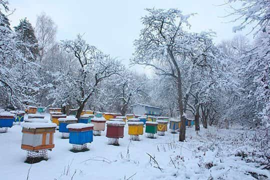
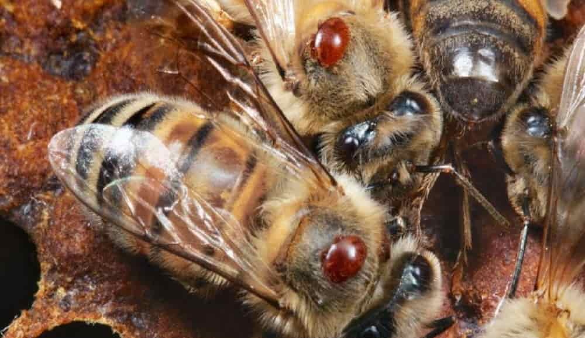

Зимовка
Зимовка пчел – это процесс подготовки пчелиной семьи к зимнему периоду, когда на улице становится холодно и цветения растений нет. Этот период представляет собой особую трудность для пчёл и пчеловода, поскольку требует особого внимания к состоянию ульев и забезпечивает улей всем необходимым для выживания в условиях зимней спячки.

Подготовка ульев:
Перед наступлением зимы пчеловод должен осмотреть каждый улей в пасеке, чтобы убедиться, что он находится в хорошем состоянии. Это включает в себя проверку целостности ульев, отсутствие трещин и протечек, а также наличие достаточного количества рабочих пчёл и мёда в сотах. Если улей нуждается в ремонте или замене рамок, это следует сделать заранее, чтобы обеспечить пчёлам комфортные условия для зимовки.
Изоляция улья:
Ульи можно изолировать, чтобы защитить их от холода и влаги. Это может быть достигнуто путем добавления дополнительного слоя утеплителя внутри крышки или стен улья, установки ветрозащитных экранов вокруг пасеки и использования соломенных материалов для утепления.
Подкормка:
Если запасы мёда в улье недостаточны для зимовки, пчеловод может покормить пчёл сахарным сиропом или другими кормами. Сахарный сироп можно подавать в специальных кормушках или кормушках-поилках, которые устанавливаются внутри улья. Важно учитывать, что пчёлы нуждаются в разной пище в разное время года, поэтому подбор типа и количества корма должен быть обдуманным.
Контроль влажности:
Влажность в улье должна быть под контролем, чтобы избежать скопления конденсата и образования плесени. Для этого можно использовать специальные вентиляционные отверстия или сетки, чтобы обеспечить циркуляцию воздуха в улье. Также следует избегать перегрева улья, так как это может привести к излишней конденсации.
Медоотжимка:
Перед зимовкой рекомендуется провести медоотжимку, чтобы избавить соты от излишнего мёда. Это поможет предотвратить кристаллизацию мёда в сотах и обеспечить пчёлам доступ к необходимым запасам в течение зимы. Однако стоит помнить, что при этом необходимо оставить достаточное количество мёда для пчёл на зиму.
Контроль паразитов и болезней:

Перед зимовкой пчёловод должен осмотреть ульи на наличие паразитов и болезней. Важно обнаружить и лечить любые инфекции или заражения заболеваниями до наступления зимы, чтобы предотвратить их распространение в пасеке. Для этого можно использовать различные методы диагностики и лечения, включая использование лекарственных препаратов и обработку ульев специализированными средствами.
Подготовка вентиляции:
Ульи должны быть оборудованы специальными вентиляционными отверстиями или сетками, чтобы обеспечить циркуляцию свежего воздуха в улье и предотвратить скопление углекислого газа. Это поможет поддерживать оптимальные условия внутри улья и предотвращать возникновение проблем с влажностью и конденсатом.
Зимовка пчёл – это важный этап в пчеловодстве, требующий внимательной подготовки и заботы со стороны пчеловода. Обеспечив правильные условия для зимовки, пчёлы смогут успешно пережить холодный период и активно начать работу весной.